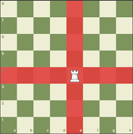
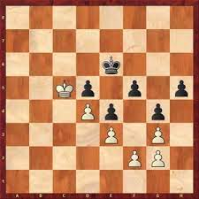
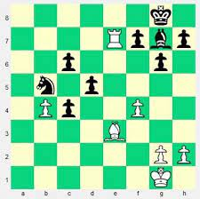
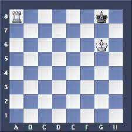

Endgame Strategy: Rook Endgames
Rook endgames are often very complex, and can involve a variety of different strategic themes. In general, the goal is to use your rook to control key files and ranks, and to either advance your pawns or attack your opponent's pawns.
Key Positions
There are many key positions that arise in rook endgames. One important concept is the activity of the rook. It's generally advantageous to have your rook as active as possible, controlling key files and ranks. If your rook is passive, your opponent may be able to take advantage of this and gain an advantage.
Pawn Breakthroughs
In many rook endgames, pawn breakthroughs are a key theme. This involves advancing one or more pawns in an effort to create a passed pawn or to break through your opponent's pawn structure. It's important to calculate carefully before attempting a pawn breakthrough, as your opponent may be able to counterattack.
Opposition
The opposition is also an important concept in rook endgames. This occurs when the kings face each other with only one square in between. The player who is not in the opposition may have to move their king away, allowing the opponent's king to advance and gain an advantage.
King and Rook Endgames
King and rook endgames are some of the most difficult and complex endgames in chess. In these endgames, each player has a king and a rook remaining on the board. The key is to use your rook to create threats and to control key files and ranks, while avoiding any tactics or checks that could lead to the loss of the game.
